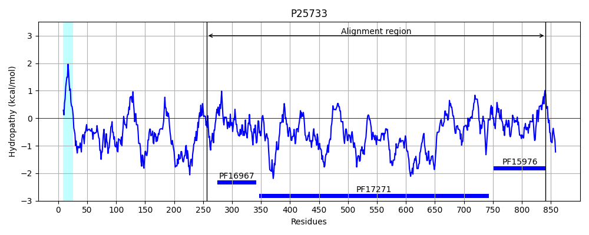
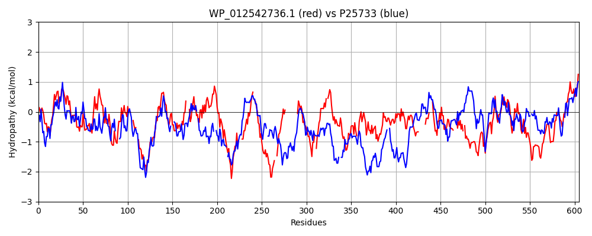

Hit Accession: P25733
Hit TCID: 1.B.11.4.1
Hit Description: gnl|BL_ORD_ID|9562 gnl|TC-DB|P25733|1.B.11.4.1 CFA/I fimbrial subunit C OS=Escherichia coli GN=cfaC PE=4 SV=1
Mach Len: 605
e:0.000000
Query TMS Count : 1
Hit TMS Count: 1
TMS-Overlap Score: 0.800000
Predicted Substrates:None
BLAST Alignment:
Score: 180 , Bit scores: 73 bits, E-value: 1.9e-13, Alignment length: 605, Percentage identity: 23
Query: 264 IYGLSWGNQASSTVFDNSQSATPVIAFLPAAGEVHLTRDGRLLSVQNFAMGNHEVDTRGLPYGIYDVEVEVIVNGRVVSKRTQRVNKLFSRGRGIGAPLAWQVW--GGSF--HMDRWSESGKKTRPAKESWLAGLSTSGSLSTLSWAATGYGYDNQAVGETRLTLP---LGESINVNLQNMLASDSSWSSVGSISATLPGGFSSVWVNQERTRIGDQLRRSDAD----NRAIGGTLNLNAL-WSKLGTFSVSYNDDRRYNSHYYT--ADYYQTVYSG-------------AFGSLGLRAGIQRYNNGDSS-ANTGKYIALDLS-LPLGNWFSAGMTHQNGYTMANLSARKQFDEGTI-RTIGANLSRAISGDTGDDKTLSGGAYAQFDARYASGTLNVNSAADGYVNTNLTASGSVGWQGKNIAAS-------GRTDG---NAGVIFNTGLEDDGQISARVNGRI---FPLSGKRN-YLPLSPYGRYEVELQNSKNSLDSYDIVSGRKSHLTLYPGNVAVIEPEVKQMVTVSGRIRAEDGTLLANARINNHIGRTRTDENGEFVMDVDKKYPTIDFSYGGN-KTCEVALELSQARGAVWVGDVVC 823
I G+ G S + A+PV L V R+ +LL V G +E+DT LPYG YD+++++ N ++V + NK GR + W ++ GG+ DR+ E + + + L L + ++S + DN++ E L L S+N + L D++ + SIS T GFS + + ++ R+ + R +A + +L++ L W+ +S +Y++ Y SH + Y Q +Y G + I YN+ + G YI++ ++ N + G ++ Y+ N S+ + F +G + T + A + G + + R+ G LN + + + NTN T G + A + G T G AG I D + +V G + + L N ++P+ + ++++ ++ I++ + + + PGNV +E E K V+ GR +GT L+ A + N DE+G F + T+ G TC++ + +G V+VGDV+C
Sbjct: 256 IDGIRTGTTQSYIKNTDKFIASPVTVMLTNFSRVEAFRNDQLLGVWYLDSGVNELDTARLPYGSYDLKLKIFENTQLVREEIIPFNK----GRSSIGDMQWDIFVQGGNIVNDNDRYIEKQNNHKSSINTGLR-LPITKNISVQQGVSV---IDNKSYYEGSLKWNSGILSGSLNSEF-SFLWGDNAKGNYQSISYT--DGFSLSFYHNDK-RVDNCGRNYNAGWSGCYESYSASLSIPLLGWTSTLGYSDTYSES-VYKSHILSEYGFYNQNIYKGRTQRWQLTSSTSLKWMDYNFMPAIGIYNSEQRQLTDKGGYISVTITRASRENSLNTGYSY--NYSRGNYSSNELFVDGYMTSTNNGDYHEAGMRFNKNRHNAEGRLSGRINNRF--GDLNGSFSMNKNRNTNSTNHSLTGGYNSSFALTSDGFYWGGSTAGLTKLAGGIIKVKSNDTKKNLVKVTGTLYGDYSLGSNDNAFIPVPALTPASLIIEDNNYGDNNISILAPTNNDMFMLPGNVYPVEIETKVSVSYIGRGFDPNGTPLSGAHVLNE-PHVILDEDGGFSFEYTGNEKTLFLLKGRTIYTCQLG-KNKVHKGIVFVGDVIC 841 | Protein Hydropathy Plots: |
|---|
 |  |
Pairwise Alignment-Hydropathy Plot:
|
|---|
|  |